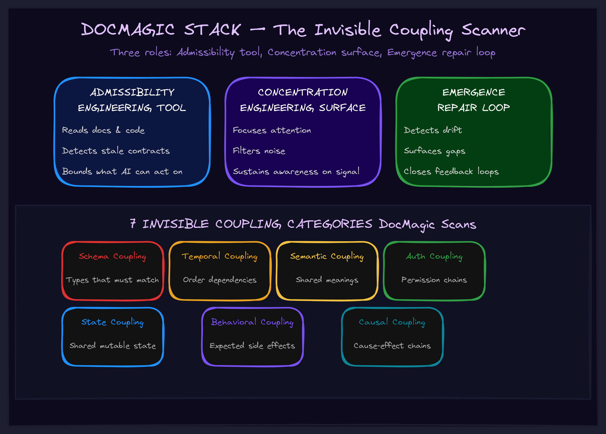

April 2026Level 5 · AdmissibilityDrift & repair
Where DocMagic Sits in the Stack
DocMagic is an Admissibility Engineering tool, a Concentration Engineering support surface, and an Emergence Engineering repair loop. Here's what that means concretely.

The Concrete Problem
AI agents cannot safely edit what they cannot see.
A repo is not just a pile of files. It is a set of overlapping execution surfaces: source code, tests, docs, comments, generated artifacts, state files, hooks, workflows, runtime side effects, and retrieval/indexing layers.
Human developers often know these relationships implicitly. LLM agents usually do not. They search, read a few visible files, infer a local story, and then edit code as if the hidden causal system does not exist.
That is how AI-coded repos drift.
What DocMagic Scans
DocMagic scans for 7 categories of invisible coupling:
HTTP calls — cross-service calls to localhost ports File triggers — daemons watching directories for changes Hook bridges — code registered to fire on events MCP references — tool calls embedded in strings Cross-imports — imports reaching across package boundaries State files — shared mutable state via temp/config files Multi-write drift — multiple writers to the same file
What It Produces
Every hidden connection gets a local, searchable, agent-readable breadcrumb:
# DOCMAGIC: HTTP → localhost:8080/hook/posttooluse (CAVE)
# Contract: POST JSON with tool_name, tool_input, tool_response
# Sync-with: omnisanc_logic.py, paia_posttooluse.py
def _post_to_cave_hook(tool_name, tool_input, response):
...
The breadcrumb is not documentation. It is an admissibility marker. It tells the next agent: this function participates in a hidden causal chain. Include these edges in your edit boundary or you will break something you cannot see.
Three Roles in the Stack
1. Admissibility Engineering Tool
DocMagic answers the pre-edit question: Is this operation licensed by enough visible structure to be safely performed?
Before the agent touches any file, DocMagic can tell it:
This file has 3 hidden callers you haven't read. This function writes to a state file watched by 2 daemons. This comment claims behavior the code no longer performs. This import crosses a package boundary into a subsystem with its own release cycle.
Without DocMagic, the agent edits locally and hopes. With DocMagic, the agent knows its edit boundary before it starts.
2. Concentration Engineering Surface
DocMagic annotations keep the agent aware of nonlocal behavior at the exact point where it matters — in the source file, at the function definition, right where the agent's cursor is.
Context Engineering loads information into the window. Concentration Engineering keeps the agent using that information at the right moment. A # DOCMAGIC: HIDDEN-CALL comment does both simultaneously: it is context injection AND attention anchoring at the exact edit site.
3. Emergence Engineering Repair Loop
Every time DocMagic runs, it detects new hidden edges and patches the explanatory surfaces. This is a concrete emergence loop:
agent acts → code changes → DocMagic scans → finds new hidden edges → annotations added → explanatory surfaces repaired → next agent sees better boundaries → edits become safer → system becomes more self-readable
The repo improves its own admissibility over time. Each scan makes the next edit safer. That is productive emergence — not vague magic, but a concrete repair loop.
The Hypebeast Translation
The hypebeast complaint: AI coding agents make messy, brittle, weird code.
The technical answer:
Of course AI-coded repos rot. The agent's visible context diverges from the repo's actual execution/causality geometry. Repair the geometry, then the agent can act inside a better self-model.
Try It
pip install docmagic
Copy the skill to your project:
cp -r .claude/skills/docmagic/ your-project/.claude/skills/docmagic/
Claude reads the skill, becomes Doctor Magic, and scans before editing.
Go Deeper
DocMagic sits inside the TWI framework library at the intersection of three engineering disciplines. If your AI-coded repos are drifting and you want to understand why, start with Admissibility Engineering.
Want to see what DocMagic finds in your codebase? We run the scan as part of every AI readiness engagement.